Charlas abiertas sobre datos e investigación educativa
La fuente casi perfecta
(Inspirado en El crimen casi perfecto de Roberto Arlt)
Fuentes cartográficas y geoestadísticas
Mapas, datos censales, oferta educativa y geoportales para trabajar territorialmente la información.
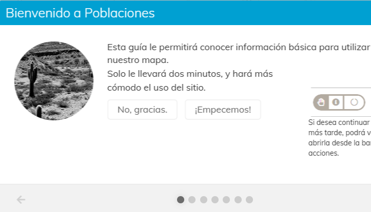
Mapa
Territorio
Mapa población
Visor cartográfico para explorar indicadores y capas territoriales de la plataforma Poblaciones.
Abrir mapa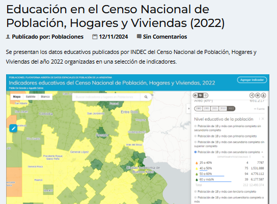
Censo 2022
Educación
Educación en el Censo
Indicadores educativos del Censo 2022 para analizar asistencia, nivel educativo y recortes territoriales.
Acceder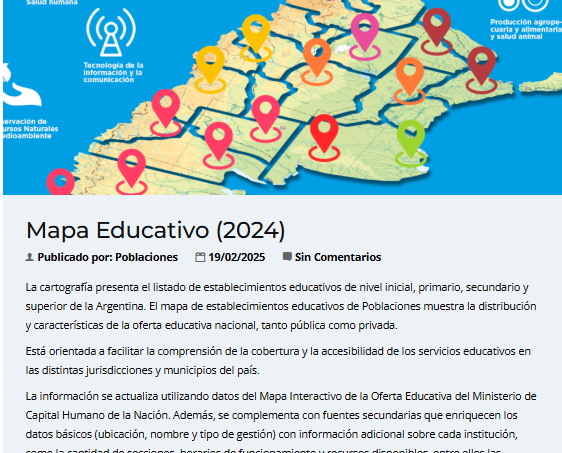
Mapa educativo
2024
Mapa Educativo 2024
Cartografía de establecimientos educativos y datos asociados para aproximarse a oferta, matrícula y gestión.
Acceder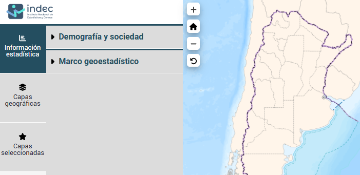
INDEC
Geoportal
Portal estadístico del INDEC
Portal de consulta y trabajo con capas, geoservicios y geodatos oficiales.
Abrir portalApps para análisis espacial
Herramientas para explorar, mapear y analizar patrones territoriales.
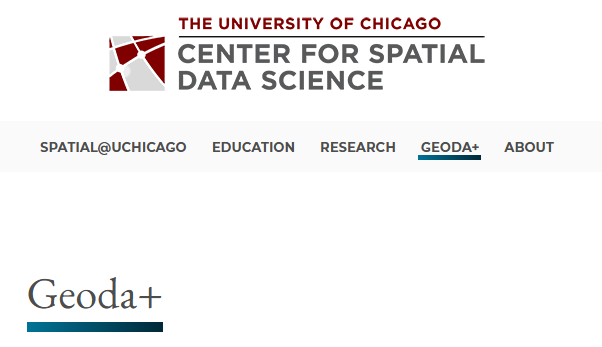
Software
Estadística espacial
GeoDa
Aplicación para análisis exploratorio de datos espaciales, autocorrelación, clusters y visualización de mapas.
Abrir GeoDa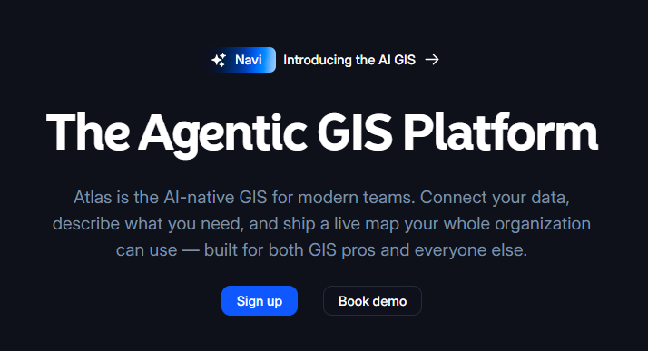
Web GIS
Mapas
Atlas
Herramienta web colaborativa para crear mapas, conectar datos y construir flujos de análisis espacial.
Abrir Atlas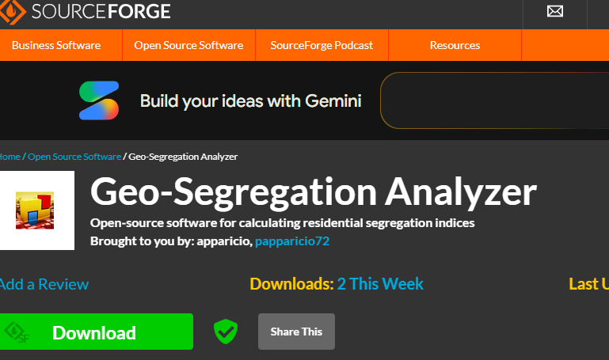
Segregación
Análisis
Geo-Segregation Analyzer
Herramienta orientada al análisis de segregación espacial y patrones de distribución territorial.
Abrir herramienta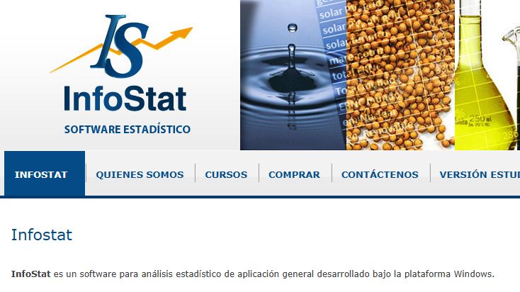
Estadística
Análisis
InfoStat
Software estadístico para procesamiento, visualización y análisis de datos cuantitativos.
Abrir InfoStatMateriales de trabajo
Carpetas compartidas para descargar bases, ampliar referencias y ejercitar análisis espacial.
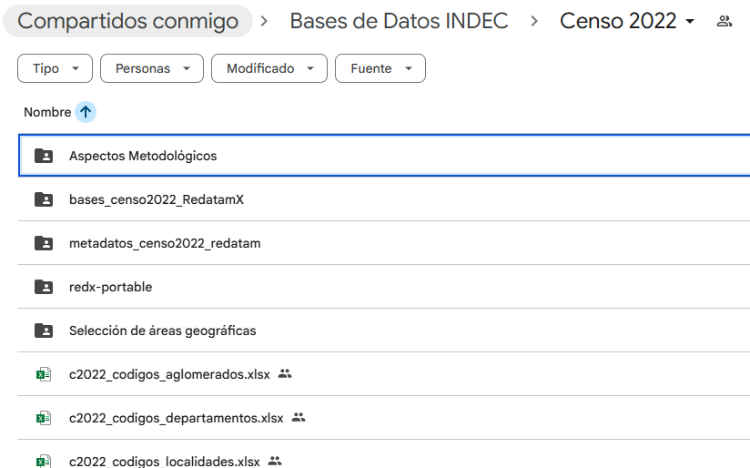
Drive
Censo
Información y bases de datos del Censo
Para explorar y explotar datos de Argentina.
Abrir carpeta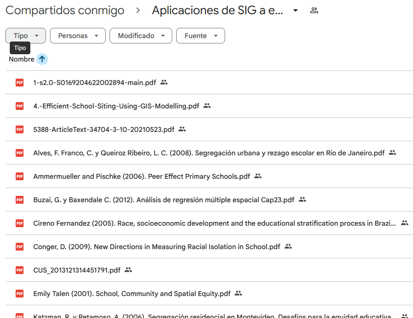
Drive
Bibliografía
Bibliografía
Para ampliar conceptos, métodos y referencias de análisis espacial.
Abrir carpeta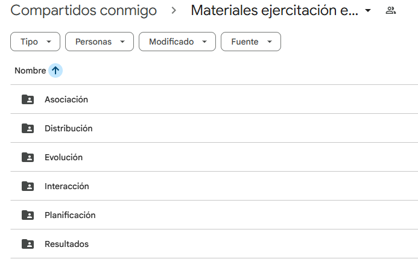
Drive
Ejercitación
Materiales para ejercitación
Para replicar los ejercicios reaizados durante la charla.
Abrir carpeta
Loom
Atlas
Accesibilidad geográfica a escuelas secundarias
Este Loom explica cómo realizar un análisis de accesibilidad geográfica a escuelas secundarias en Tandil usando un sistema de información geográfica (Atlas).
Abrir LoomVideo de la charla
Registro completo de la presentación.